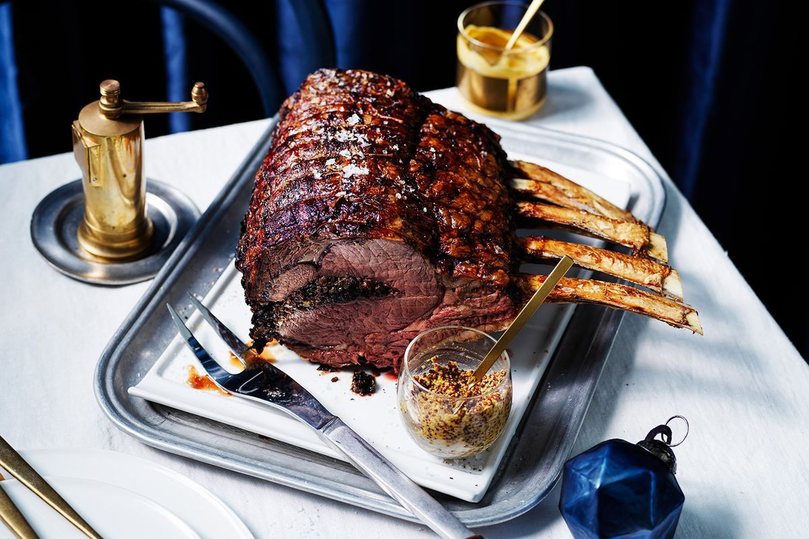

Meat is animal flesh that is eaten as food. ... Humans have hunted, farmed, and scavenged animals for meat since prehistoric times
Meat is animal flesh that is eaten as food. Humans have hunted, farmed, and scavenged animals for meat since prehistoric times. The establishment of settlements in the Neolithic Revolution allowed the domestication of animals such as chickens, sheep, rabbits, pigs, and cattle